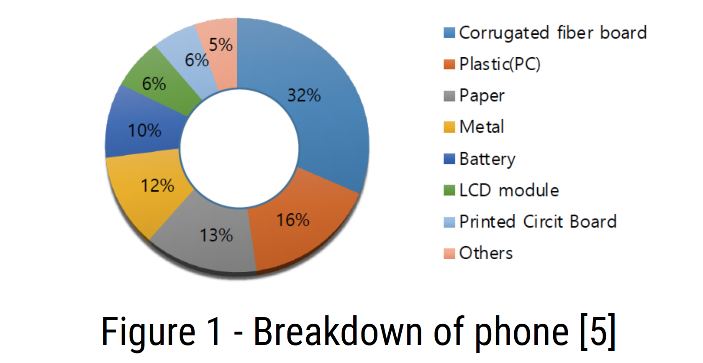
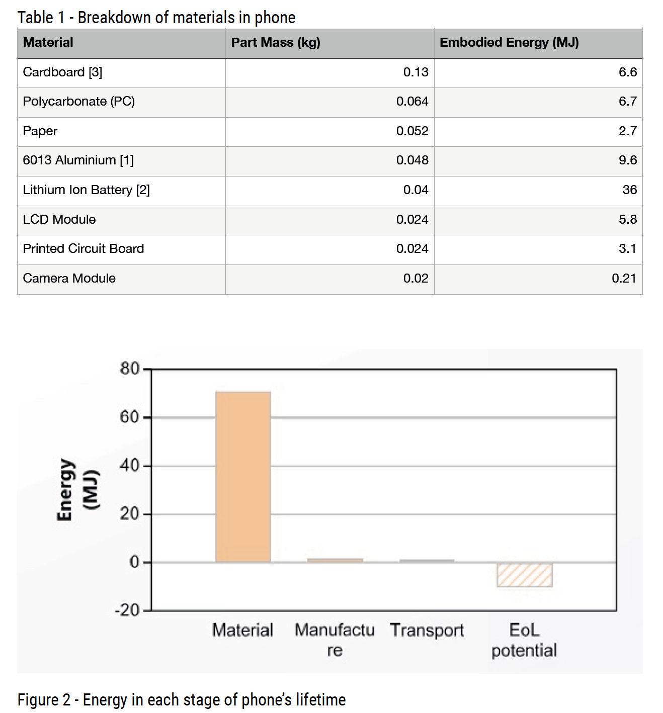

Louis Cutner
In this report, I investigated the energy
associated with each phase of the Samsung
Galaxy S6’s lifetime. Initially I looked at the
breakdown of materials in the phone. Each of
these materials and their respective weights
were put into CES EduPack to find their
embodied energies. From this the total
embodied energy of the phone was calculated
to be 71 MJ. The embodied energy calculations
for each material were also performed manually
to verify the output from CES EduPack.
The phone is manufactured in Vietnam, then
shipped to the UK, where it is driven to the store. The energy in transport was
calculated in CES EduPack to be 1.26 MJ, however when calculated manually the value
was 0.453 MJ. This difference is likely due to inefficiencies such as the ship taking a
longer route, or not being loaded to 100% capacity.
The energy in use was then calculated for the phone – assuming the phone has a
lifetime of only three years. This is based on the fact that Samsung stop supporting
updates for phones over three years old. In one day, it was calculated that the energy
use in standby mode would be 55,674 J, the energy in normal use would be 6,854 J,
and the energy in heavy use would be 27,785 J – with the total for one day being
approximately 90,313 J. The total energy use over the lifetime of the phone would be
98.9 MJ.
Breakdown of materials used
For the teardown of the Samsung Galaxy S6 phone,
preliminary data on the materials used was gleaned
from Figure 1. From this, the major material groups
were determined, then further refined with specific
information for the S6, such as the type of Aluminium
used. The masses were approximated from Figure 1,
and using the CES EduPack database [4], embodied
energies were calculated for each material, with a
total embodied energy of 71MJ for the phone. Table 1
shows the materials, their respective masses and
embodied energies. Some assumptions and estimates were made where data was
unavailable, such as the ‘others’ section was presumed to be the camera module. The results
from CES EduPack can be seen in Figure 2.

Material Assumptions
1. Cardboard [3]
The phone is packaged in a box, which was determined to be made from cardboard.
Cardboard is used for its lightweight, manufacturable and fairly durable qualities.
Cardboard also allows for images and product descriptions to be printed upon it.
2. Polycarbonate (PC)
The back of the phone is made from polycarbonate, this is a material that is easily
moulded to make a phone shape and can be coloured for personalisation. In addition,
polycarbonate has good strength, toughness and durability properties, which are suitable
qualities for providing the phone with protection against scratches and drops.
3. Paper
Paper is used for the instructions manual of the phone, which is included within the
packaging when a new phone is bought. Paper is used as a common material in which
usage and care instructions can be printed upon in bulk.
4. Aluminium 6013 [1]
Aluminium’s good strength, toughness and durability properties allows for a strong and
stable phone frame, which safely holds all the inner components of the phone. The
specific alloy used in the S6 is 6013.
5. Lithium Ion Battery [2]
Lithium-ion batteries are one of the lightest batteries with a good energy density – making
it suitable for smart phone use. In CES EduPack, the option for a rechargeable lithium-ion
battery was selected.
6. LCD Module
In CES EduPack, the option for a liquid crystal display panel was selected.
Figure 1 - Breakdown of phone [5]
7. Printed Circuit Board
In CES EduPack, the option for a printed circuit board assembly was chosen.
8. Camera Module
The main other component of the smart phone was the rear camera, which was assumed
to be made of soda lime glass, for its optical transparency qualities, and resistance to
scratches, unlike other transparent materials such as acrylic or Perspex.

Material embodied energy calculations
Using data from the CES EduPack database [4], the embodied energies for each component of
the phone was calculated. This was achieved by multiplying the component’s mass by the
material’s embodied energy per kilogram. Calculations can be seen below:
• Cardboard, mass = 0.13kg
Material embodied energy = 49-54 MJ/kg, mean = 51.5 MJ/kg
Component embodied energy = 0.13 x 51.5 = 6.70 MJ
• Polycarbonate (PC), mass = 0.064 kg
Material embodied energy = 100-111 MJ/kg, mean = 105.5 MJ/kg
Component embodied energy = 0.064 x 105.5 = 6.75MJ
• Paper, mass = 0.052 kg=
Material embodied energy = 49-54 MJ/kg, mean = 51.5 MJ/kg
Component embodied energy = 0.052 x 51.5 = 2.68 MJ
• 6013 Aluminium, mass = 0.048 kg
Material embodied energy = 186-205 MJ/kg, mean = 195.5 MJ/kg
Component embodied energy = 0.048 x 195.5 = 9.38 MJ
• Lithium Ion Battery, mass = 0.04 kg
Material embodied energy = 900 MJ/kg
Component embodied energy = 0.04 x 900 = 36 MJ
• LCD Module, mass = 0.024 kg
Material embodied energy = 240 MJ/kg
Component embodied energy = 0.024 x 240 = 5.76 MJ
• Printed Circuit Board, mass = 0.024 kg
Material embodied energy = 130 MJ/kg
Component embodied energy = 0.024 x 130 = 3.12 MJ
• Camera Module, mass = 0.02 kg
Material embodied energy = 10.1-11.1 MJ/kg, mean = 10.6 MJ/kg
Component embodied energy = 0.02 x 10.6 = 0.21 MJ
Total Embodied Energy = 70.6 MJ
Transport embodied energy calculations
CES EduPack was also used to calculate the energy used in transporting the phone from the
Samsung manufacturing plant in Vietnam to London. This was assumed to be 17,000 km by a
shipping container to Southampton port, then 100 km by lorry to London. The CES value was
1.26 MJ, but independent calculations were performed below to verify this number.
If an ocean freight ship containing 18,000 shipping containers was to travel 21,140 km from
Hong Kong to Hamburg, the fuel required would contain approximately 195,300 GJ of energy
[6].
Energy per km = 195,300 ÷ 21,140 = 9.24 GJ/km
The phone will travel 17,000 km from Saigon, Vietnam to Southampton, UK.
Energy consumption = 9.24 x 17,000 = 157,053 GJ
Energy consumption per shipping container = 157,053 ÷ 18,000 = 8.73 GJ
One shipping container has a volume of 38.5 m2 [7], and it is also assumed that the
dimensions of a phone box are 0.1 x 0.1 x 0.2 m.
Phones per shipping container = 38.5 / (0.1 x 0.1 x 0.2) = 19,250 phones
Energy to transport one phone = 8.73 / 19,250 = 0.453 MJ
Therefore it can be seen that the calculated
value for the energy in transport of 0.453 MJ, is
significantly less than the value of 1.26 MJ calculated by CES EduPack, however in the same
order of magnitude. This difference is likely due to inefficiencies such as the ship taking a
longer route, or not being loaded to 100% capacity.